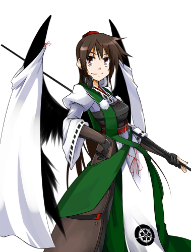
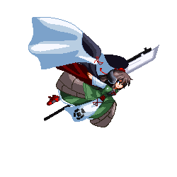

（立ち絵画像提供：へもぐろびん氏）
名前：天魔
性別：女
年齢：最も古い天魔
外見：最も新しい天魔
性格：享楽主義者 好奇心旺盛(基本、天狗達は似たような性質持ち)
能力：『逸楽を牛耳る程度の能力』
武器：河童製銃剣＋両翼の仕込み銃
好きなもの：感情(欲望)のこもったあらゆる善・悪 新しいもの(物でも者でも、果ては知識や事象)
お気に入り：ヘッドフォン(何処で入手したか不明)
妖怪の山に住む、天狗と河童のトップに立つ天狗、『天魔』と呼ばれている存在が何種かいるため、どの『天魔』かは不明。
詳細な情報があまりなく、聞いても上手くかわされてしまうため謎が多い
妖の類なのか神の類なのかも分からず、分かっていることは妖怪の山を統べる実力を持っていることである。
普段は妖怪の山の何処かでのんびりしているか、『新しいもの』を求めて無縁塚へ漁りに行ったりする
その際、無縁塚によく来る者達に絡んで酒を飲んだりしては閻魔に怒られている(まったく懲りてないが)。
能力の『逸楽を牛耳る程度の能力』は他者の満たされている・欲する欲望を奪い又は与える能力。
やる気なら相手を完全無気力状態にすることも可能で、精神が生命線である妖怪には致命傷を与えられる。
しかし、天狗達は『能力を見せびらかせない性質』であり、彼女も例外ではなく、使うのは余程の緊急時のみ
武器の銃剣は部下の河童に作らせた特注品、出てくる弾は実弾っぽいが普通の弾幕と変わらない。
過去に月での戦いで得た知識を使っているため、なかなかに高性能である。ちなみに両翼には１２丁の仕込み銃がある(一度に全部使わないが)
幻想郷のトップ妖怪達とは面識があるのだが、軍神と邪神来てからは妖怪の山が被害を食らってしまう(いろいろな意味で)
が、彼女自身は新しいものが増えているのでむしろ喜んでいる。
お気に入りのヘッドフォンは銃声による爆音を防ぐ耳栓代わりにしている
天魔の性能
基本ステータス
attack ７０
defence １００
移動関連
↑or↓ボタンを押すと上昇・降下することが可能
しかし、上昇は天魔の体半分程度しか上昇できない
上昇中は掴み無効
霊力ゲージ
東方キャラなら積まれている特殊ゲージ
天魔はコンボに必要なゲージとする
『単発』あるいは『通常攻撃から』の場合は必要としない
必殺技 霊力１０必要
超必殺技 霊力２０必要
コンボ補正
ヒット数が増えていくごとに技の威力が下がる
10ヒット以上はかなりダメージが抑えられてしまう
超必殺技もある程度減ってしまう
しかし、２．３ゲージ技は例外とする
『魔縁』欲界ノ獣
６Ｐ〜１１Ｐにのみ自動発動
天魔の背後に巨大なナニかが佇ずむ
一定時間おきに前方を攻撃する。
根元付近は打ち上げ攻撃が展開されている為、
背後に回ろうとすると攻撃を受けてしまうので注意。
消える条件は
・ラウンド終了時
・天魔のライフが０
・『天魔』第六天魔王波洵発動時
１１Ｐ性能
スーパーアーマー
攻撃中でも霊力回復
攻撃がガード不能に
パワーゲージ自動回復
１２Ｐ性能
攻撃が専用になる以下が攻撃と性能内容
・ステージを横切るように突進
・銃剣から黒い弾を発射
・地面から黒い手が現れる
・カラスがステージを横切る
・即死当身
・人間操作不可能
・ラウンド終了時ライフが９９９まで回復する
必殺技
基本霊力さえあれば何処からでも繋がるのでいろいろ挑戦してみて欲しい
D DF F [A]
|
疾風怒濤
|
高速の連続突きを放つ連続攻撃、出も早く、タッグに有効
|
D DF F [B]
|
天地
|
切り上げ→切り落としを放つ二段攻撃、二撃目は壁バウンド効果あり
|
D DF F [C]
|
風穴
|
敵に向かって突進する移動攻撃、攻撃を潰して間合いを詰めるのに最適
|
D DB B [A]
|
革命の咆哮
|
翼に仕込んである銃を取り出し一発放つ、構え時に攻撃判定がある
|
D DB B [B]
|
隙間のカラス
|
翼の中に隠れているをカラス三体で攻撃
|
D DB B [C]
|
嵐の舞踊
|
銃剣を回して竜巻を起こし攻撃させる、竜巻に弾幕封じがある
|
D D [A]
|
轟音の雨
|
片翼の表・裏の六丁の仕込み銃で攻撃、密接していると当たらない場合がある
|
D D [B]
|
前と後の狭霧
|
一瞬にして相手の背後に回る移動技、先代と戦うとDBできる
|
D D [Ｃ]
|
風鎌
|
壁端まで当たり続けるカマイタチを放つ射撃技
|
F DF D [A]
|
銃剣の心得
|
敵を突き刺しそのまま大砲で追い打ちする掴み技、最後は壁バウンドする
|
超必殺技
D DF F D DF F [A] １Ｇ
|
『欲符』渦巻き燃ゆる六欲
|
高く上昇した後、ほぼ前方に銃弾を撃ち込む
|
D DF F D DF F [B] １Ｇ
|
『逸楽』悟りか堕落か
|
連続突きを放ち、追い打ちで敵を串刺しにし、そのまま零距離レーザーを放つ
|
D DF F D DF F [C] １Ｇ
|
『情符』天子魔
|
斜め上に向かって突進し、相手を刺したまま、壁端まで運ぶ運送技、しゃがみガード可能
|
[Y] ２Ｇ
|
『悩符』他化自在天からの問い
|
三羽のカラスを呼び、自身が攻撃する時に援護させる、カラスに弾幕封じあり
|
[Z] ２Ｇ
|
『叫符』辜人の慟哭
|
地面判定の掴み技、掴んだ相手を地中に引きずり込み蹂躙する
|
D DB B [Z] ２Ｇ
|
『黒陽』身を焦がす心境
|
三体の分身を召喚し、一斉射撃させ。自分は突撃したのち零距離砲撃を行う
|
B DB D DF F [A] ３Ｇ
|
『天魔』第六天魔王波洵
|
画面中央に移動し圧倒的霊力を放つ、吸い込み効果あり
|
ネットの力無しで『辜人の慟哭』を読める人はどれ位いるだろう・・・
今回は先代巫女より設定がありますが、やはり曖昧にしてあります

新しいものを目指して、天魔様は今日も空を駆ける！！！